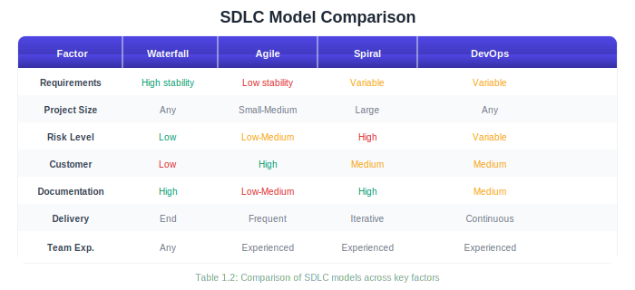
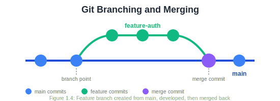
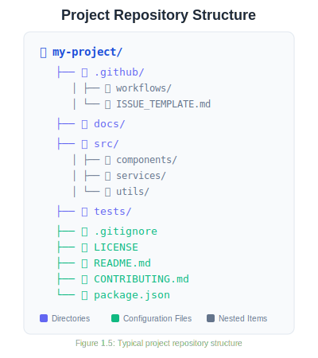

4 Chapter 1: Introduction to Software Engineering
4.1 Learning Objectives
By the end of this chapter, you will be able to:
- Define software engineering and explain its significance in modern technology
- Describe the evolution of software engineering as a discipline
- Compare and contrast major software development lifecycle (SDLC) models
- Understand the fundamentals of version control using Git and GitHub
- Apply collaborative workflows for team-based software development
- Set up a project repository with proper structure and documentation
4.2 1.1 What Is Software Engineering?
Imagine you’re building a house. You wouldn’t just start stacking bricks randomly and hope for the best, would you? You’d need blueprints, a foundation plan, electrical and plumbing designs, a construction schedule, quality inspections, and a team of specialists working together. Building software is remarkably similar—except instead of bricks and mortar, we work with code, data, and digital infrastructure.
Software engineering is the systematic application of engineering principles to the design, development, testing, deployment, and maintenance of software systems. It’s not just about writing code that works; it’s about writing code that works reliably, efficiently, and maintainably over time.
The IEEE (Institute of Electrical and Electronics Engineers) defines software engineering as:
“The application of a systematic, disciplined, quantifiable approach to the development, operation, and maintenance of software; that is, the application of engineering to software.”
This definition highlights several key aspects:
- Systematic: Following organized methods and processes
- Disciplined: Adhering to standards and best practices
- Quantifiable: Measuring progress, quality, and outcomes
- Comprehensive: Covering the entire lifecycle, not just coding
4.2.1 1.1.1 Software Engineering vs. Programming
A common misconception among newcomers is that software engineering and programming are the same thing. While programming is certainly a core skill within software engineering, the discipline encompasses much more.

Think of it this way: a programmer might write an excellent function to sort a list of names. A software engineer asks questions like: How will this sorting function integrate with the rest of the system? What happens when the list contains millions of names? How will we test it? Who will maintain it? How do we deploy updates without breaking existing functionality?
4.2.2 1.1.2 A Brief History of Software Engineering
The term “software engineering” was first coined at the 1968 NATO Software Engineering Conference in Garmisch, Germany. This conference was convened in response to what was then called the software crisis—a period when software projects were consistently failing, running over budget, delivering late, and producing unreliable results.
In the early days of computing (1940s-1960s), software was often an afterthought. Hardware was expensive and precious; software was seen as a minor component. Programs were small, written by individuals, and often tied to specific machines. Documentation was rare, and the concept of “maintenance” barely existed—if a program didn’t work, you wrote a new one.
As computers became more powerful and widespread, software grew in complexity. The 1960s saw ambitious projects like IBM’s OS/360 operating system, which employed thousands of programmers and took years longer than planned. Frederick Brooks, who managed that project, later wrote “The Mythical Man-Month,” a seminal book that observed:
“Adding manpower to a late software project makes it later.”
This counterintuitive insight—that you can’t just throw more programmers at a problem to solve it faster—underscored the need for better engineering practices.
The decades that followed brought waves of innovation in how we approach software development:
- 1970s: Structured programming and the Waterfall model emerged
- 1980s: Object-oriented programming and CASE (Computer-Aided Software Engineering) tools
- 1990s: Component-based development, the rise of the internet, and early Agile ideas
- 2000s: Agile Manifesto (2001), widespread adoption of iterative methods
- 2010s: DevOps culture, continuous delivery, cloud computing
- 2020s: AI-assisted development, platform engineering, and infrastructure as code
Today, software engineering continues to evolve rapidly. The principles you’ll learn in this course represent decades of accumulated wisdom from millions of projects—both successful and failed.
4.3 1.2 The Role of Software Engineering in Modern Systems
Software has become the invisible infrastructure of modern civilization. Consider a typical morning: your smartphone alarm wakes you (software), you check the weather app (software connecting to distributed systems), your smart thermostat adjusts the temperature (embedded software), you drive to work with GPS navigation (software integrating satellite data), and you buy coffee with a tap of your phone (financial software processing transactions across multiple systems).
4.3.1 1.2.1 Software Is Everywhere
The scale of software’s presence in our world is staggering:
Transportation: Modern vehicles contain 100+ million lines of code. The Boeing 787 Dreamliner runs on approximately 6.5 million lines of code. Self-driving cars process terabytes of sensor data through sophisticated software systems.
Healthcare: Electronic health records, diagnostic imaging systems, robotic surgery equipment, drug interaction databases, and pandemic tracking systems all depend on reliable software engineering.
Finance: High-frequency trading systems execute millions of transactions per second. Banking apps handle trillions of dollars in transfers. Cryptocurrencies run on complex distributed software systems.
Communication: Social media platforms serve billions of users simultaneously. Video conferencing software enables global collaboration. Messaging apps deliver hundreds of billions of messages daily.
Infrastructure: Power grids, water treatment plants, air traffic control systems, and emergency services all rely on software that must work correctly, all the time.
4.3.2 1.2.2 The Cost of Software Failures
When software fails, the consequences can range from minor inconveniences to catastrophic disasters. Understanding these failures helps us appreciate why rigorous software engineering practices matter.
The Therac-25 Accidents (1985-1987): A radiation therapy machine’s software bugs caused massive overdoses, killing at least three patients and seriously injuring others. The failures resulted from poor software design, inadequate testing, and the removal of hardware safety interlocks that had been present in earlier models.
Ariane 5 Explosion (1996): The European Space Agency’s rocket exploded 37 seconds after launch, resulting in a $370 million loss. The cause? A software error—specifically, an integer overflow when 64-bit floating-point data was converted to a 16-bit signed integer. Code reused from the Ariane 4 hadn’t been tested for the new rocket’s different flight parameters.
Knight Capital Glitch (2012): A software deployment error caused a trading firm to lose $440 million in just 45 minutes. Old, deprecated code was accidentally activated, executing millions of unintended trades. The company nearly went bankrupt overnight.
Healthcare.gov Launch (2013): The U.S. government’s health insurance marketplace website failed spectacularly at launch, unable to handle user traffic and plagued with bugs. The problems stemmed from inadequate testing, poor project management, and insufficient integration between components built by different contractors.
These examples share common themes: inadequate testing, poor communication, rushed timelines, and insufficient attention to software engineering principles. They demonstrate that software engineering isn’t just an academic exercise—it’s a matter of safety, economics, and public trust.
4.3.3 1.2.3 The Value of Good Software Engineering
Conversely, excellent software engineering creates enormous value:
Reliability: Well-engineered systems work correctly, consistently, over time. Users trust them.
Scalability: Properly architected systems can grow to serve millions or billions of users without fundamental redesigns.
Maintainability: Good engineering practices make it possible to fix bugs, add features, and adapt to changing requirements efficiently.
Security: Systematic approaches to security protect users’ data and privacy.
Cost Efficiency: While good engineering requires upfront investment, it dramatically reduces long-term costs by preventing bugs, reducing technical debt, and enabling faster development of new features.
4.4 1.3 The Software Development Life Cycle (SDLC)
The Software Development Life Cycle (SDLC) is a framework that describes the stages involved in building software, from initial concept through deployment and maintenance. Think of it as a roadmap for transforming an idea into a working system.
While different methodologies organize these stages differently, most include some version of:
- Requirements: What should the system do?
- Design: How will the system be structured?
- Implementation: Writing the actual code
- Testing: Verifying the system works correctly
- Deployment: Releasing the system to users
- Maintenance: Ongoing updates, fixes, and improvements
Different SDLC models arrange these stages in different ways, with different philosophies about planning, flexibility, and iteration. Let’s explore the major models you’ll encounter in professional practice.
4.4.1 1.3.1 The Waterfall Model
The Waterfall model is the oldest and most traditional approach to software development. Introduced by Winston Royce in 1970 (though he actually presented it as an example of a flawed approach!), it organizes development into sequential phases that flow downward, like a waterfall. 
Key Characteristics:
- Each phase must be completed before the next begins
- Extensive documentation at each stage
- Formal reviews and sign-offs between phases
- Changes are difficult and expensive once a phase is complete
- Testing occurs late in the process
When Waterfall Works Well:
- Requirements are well-understood and unlikely to change
- The technology is mature and well-known
- The project is relatively short
- Regulatory compliance requires extensive documentation
- The customer can articulate complete requirements upfront
When Waterfall Struggles:
- Requirements are unclear or likely to evolve
- The project is long-term (requirements will change)
- Rapid feedback is needed
- Innovation or experimentation is involved
- The customer wants to see working software early
Example Scenario: Developing software for a medical device that must meet FDA regulations might use Waterfall. The requirements are clear (based on medical standards), extensive documentation is mandatory, and changes after approval are extremely costly.
4.4.2 1.3.2 Agile Methodology
Agile is not a single methodology but a family of approaches that share common values and principles. The Agile Manifesto, published in 2001, articulates four core values:
Individuals and interactions over processes and tools
Working software over comprehensive documentation
Customer collaboration over contract negotiation
Responding to change over following a plan
This doesn’t mean Agile ignores processes, documentation, contracts, or plans—but it prioritizes the items on the left when trade-offs must be made.
The Twelve Principles of Agile Software:
- Satisfy the customer through early and continuous delivery of valuable software
- Welcome changing requirements, even late in development
- Deliver working software frequently (weeks rather than months)
- Business people and developers must work together daily
- Build projects around motivated individuals; give them support and trust
- Face-to-face conversation is the most effective communication method
- Working software is the primary measure of progress
- Maintain a sustainable pace indefinitely
- Continuous attention to technical excellence and good design
- Simplicity—maximizing work not done—is essential
- Self-organizing teams produce the best architectures and designs
- Regular reflection on how to become more effective
Common Agile Frameworks:
Scrum is the most popular Agile framework. It organizes work into fixed-length iterations called sprints (typically 2-4 weeks). Key elements include:
- Product Backlog: Prioritized list of features and requirements
- Sprint Planning: Team commits to work for the upcoming sprint
- Daily Standups: Brief daily meetings to synchronize the team
- Sprint Review: Demonstration of completed work to stakeholders
- Sprint Retrospective: Team reflects on process improvements
- Roles: Product Owner, Scrum Master, Development Team
Kanban focuses on visualizing workflow and limiting work in progress. Work items move across a board through stages (e.g., To Do → In Progress → Review → Done). Unlike Scrum, Kanban doesn’t use fixed-length iterations.
Extreme Programming (XP) emphasizes technical practices like pair programming, test-driven development, continuous integration, and frequent releases.
When Agile Works Well:
- Requirements are expected to change
- Customer feedback is available regularly
- The team is co-located or has good communication tools
- The organization supports iterative delivery
- Innovation and adaptation are valued
When Agile Struggles:
- Fixed-price contracts with rigid specifications
- Distributed teams with poor communication
- Regulatory environments requiring extensive upfront documentation
- Customers unwilling or unable to participate actively
- Very large-scale projects without proper scaling frameworks
4.4.3 1.3.3 The Spiral Model
The Spiral model, proposed by Barry Boehm in 1986, emphasizes risk management. Development proceeds through multiple iterations, each passing through four phases:
- Planning: Determine objectives, alternatives, and constraints
- Risk Analysis: Identify and evaluate risks; create prototypes
- Engineering: Develop and verify the product
- Evaluation: Review results and plan the next iteration

Each loop around the spiral represents a more complete version of the software. Early iterations might produce paper prototypes or proof-of-concept code; later iterations produce the actual system.
Key Characteristics:
- Explicit focus on identifying and mitigating risks
- Combines iterative development with systematic aspects of Waterfall
- Prototyping used to reduce uncertainty
- Flexibility to adapt the process to project needs
When Spiral Works Well:
- Large, complex projects
- High-risk systems where failure would be catastrophic
- Projects with uncertain or evolving requirements
- Situations requiring significant prototyping
4.4.4 1.3.4 DevOps
DevOps represents a cultural and technical movement that bridges the traditional gap between development (Dev) and operations (Ops) teams. Rather than a distinct SDLC model, DevOps is a set of practices that can be combined with other methodologies.
Traditionally, developers wrote code and “threw it over the wall” to operations teams, who were responsible for deploying and maintaining it in production. This separation created friction: developers optimized for features and speed; operations optimized for stability and reliability. The result was slow deployments, finger-pointing when problems occurred, and systems that worked in development but failed in production.
DevOps breaks down these silos through:
Cultural Practices:
- Shared responsibility for the entire lifecycle
- Blameless post-mortems when things go wrong
- Continuous learning and improvement
- Collaboration between all roles
Technical Practices:
- Continuous Integration (CI): Automatically building and testing code whenever changes are committed
- Continuous Delivery (CD): Keeping software in a deployable state at all times
- Continuous Deployment: Automatically deploying every change that passes tests
- Infrastructure as Code: Managing servers and environments through version-controlled scripts
- Monitoring and Logging: Comprehensive visibility into system behavior
- Automated Testing: Extensive test suites that run automatically
The DevOps Lifecycle:

The cycle is continuous—monitoring in production feeds back into planning for the next iteration.
Key DevOps Metrics:
- Deployment Frequency: How often you release to production
- Lead Time for Changes: Time from commit to production
- Mean Time to Recovery (MTTR): How quickly you recover from failures
- Change Failure Rate: Percentage of deployments causing problems
High-performing DevOps organizations deploy multiple times per day, with lead times measured in hours, recover from failures in minutes, and have change failure rates below 15%.
4.4.5 1.3.5 Choosing an SDLC Model
No single model is universally best. The right choice depends on your project’s characteristics:

In practice, many organizations use hybrid approaches. For example, a team might use Scrum for iteration planning while implementing DevOps practices for CI/CD, or use a Spiral approach at the program level while individual teams work in Agile sprints.
4.5 1.4 Version Control with Git and GitHub
Version control is one of the most fundamental tools in a software engineer’s toolkit. It solves a problem you’ve probably encountered even outside of programming: how do you track changes to documents over time, collaborate with others, and recover from mistakes?
4.5.1 1.4.1 Why Version Control Matters
Without version control, teams resort to chaotic practices:
- Files named
project_final.doc,project_final_v2.doc,project_REALLY_final.doc - Emailing files back and forth
- Copying entire folders as “backups”
- Overwriting each other’s changes
- No way to see what changed, when, or why
Version control systems solve these problems by:
- Tracking every change to every file
- Recording who made each change and why
- Enabling multiple people to work simultaneously
- Allowing you to revert to any previous state
- Supporting parallel lines of development (branches)
- Facilitating code review and collaboration
4.5.2 1.4.2 Understanding Git
Git is the dominant version control system in software development today. Created by Linus Torvalds in 2005 (yes, the same person who created Linux), Git is distributed, fast, and powerful.
Key Concepts:
Repository (Repo): A repository is a directory containing your project files plus a hidden .git folder that stores the complete history of all changes. Every team member has a complete copy of the repository.
Commit: A commit is a snapshot of your project at a specific point in time. Each commit has a unique identifier (SHA hash), a message describing the change, and metadata about the author and timestamp.
commit 7f4e8d2 (HEAD -> main)
Author: Jane Developer <jane@example.com>
Date: Mon Jan 15 10:30:00 2025 -0500
Add user authentication module
- Implement login/logout functionality
- Add password hashing with bcrypt
- Create session managementBranch: A branch is an independent line of development. You might create a branch to work on a new feature without affecting the main codebase. Once the feature is complete and tested, you merge it back.

Staging Area (Index): Before committing, you add changes to the staging area. This lets you control exactly what goes into each commit—you might have modified five files but only want to commit three.
Remote: A remote is a copy of your repository hosted on a server (like GitHub). You push your local commits to the remote and pull others’ commits from it.
4.5.3 1.4.3 Essential Git Commands
Let’s walk through the fundamental Git operations you’ll use daily.
Initial Setup:
# Configure your identity (do this once)
git config --global user.name "Your Name"
git config --global user.email "your.email@example.com"Creating a Repository:
# Initialize a new repository
git init
# Or clone an existing one
git clone https://github.com/username/repository.gitBasic Workflow:
# Check status of your working directory
git status
# Add files to staging area
git add filename.py # Add specific file
git add . # Add all changes
# Commit staged changes
git commit -m "Describe what this commit does"
# View commit history
git log
git log --oneline # Compact viewWorking with Remotes:
# Add a remote (usually done once)
git remote add origin https://github.com/username/repo.git
# Push commits to remote
git push origin main
# Pull commits from remote
git pull origin main
# Fetch without merging
git fetch originBranching:
# Create a new branch
git branch feature-name
# Switch to a branch
git checkout feature-name
# Create and switch in one command
git checkout -b feature-name
# List all branches
git branch -a
# Merge a branch into current branch
git merge feature-name
# Delete a branch
git branch -d feature-name4.5.4 1.4.4 GitHub and Remote Collaboration
GitHub is a web-based platform that hosts Git repositories and adds collaboration features. While Git handles version control, GitHub provides:
- Remote Hosting: Store your repositories in the cloud
- Pull Requests: Propose changes for review before merging
- Issues: Track bugs, features, and tasks
- Projects: Kanban-style project management boards
- Actions: Automated workflows (CI/CD)
- Wikis: Project documentation
- Social Features: Stars, forks, followers
The GitHub Flow:
The most common collaborative workflow on GitHub follows these steps:
- Create a Branch: Start from
mainwith a descriptive branch name
git checkout -b feature/user-authentication- Make Changes: Write code, commit frequently with clear messages
git add .
git commit -m "Add login form component"
git commit -m "Implement authentication API endpoint"
git commit -m "Add input validation"- Push to GitHub: Upload your branch to the remote
git push origin feature/user-authenticationOpen a Pull Request: On GitHub, create a PR to merge your branch into
main. Describe what you’ve done and why.Code Review: Team members review your changes, leave comments, and request modifications if needed.
Address Feedback: Make additional commits to address review comments.
Merge: Once approved, merge the PR into
main. Delete the feature branch.Deploy: The merge to
mainmay trigger automated deployment.
4.5.5 1.4.5 Writing Good Commit Messages
Commit messages are documentation for your future self and your team. Good messages make it easy to understand the project history and find specific changes.
Structure of a Good Commit Message:
Short summary (50 chars or less)
More detailed explanation if necessary. Wrap at 72 characters.
Explain the what and why, not the how (the code shows how).
- Bullet points are okay
- Use the imperative mood: "Add feature" not "Added feature"
Fixes #123Examples of Good Commit Messages:
Add password strength indicator to registration form
Users were creating weak passwords. This adds a visual indicator
showing password strength in real-time, using the zxcvbn library
for strength estimation.
Closes #456Fix memory leak in image processing module
The image processor wasn't releasing buffer memory after use,
causing memory consumption to grow unbounded during batch processing.
Added explicit cleanup in the finally block.Examples of Poor Commit Messages:
fix bugUpdatesWIPasdfasdf4.5.6 1.4.6 Repository Structure and Documentation
A well-organized repository helps team members navigate the codebase and understand the project. Here’s a typical structure:

The README File:
The README is often the first thing visitors see. A good README includes:
- Project Title and Description: What does this project do?
- Installation Instructions: How do I set this up?
- Usage Examples: How do I use it?
- Configuration: What can I customize?
- Contributing: How can I help?
- License: What are the terms of use?
The .gitignore File:
This file tells Git which files and directories to ignore. You typically ignore:
- Build outputs and compiled files
- Dependencies (which can be reinstalled)
- IDE configuration files
- Environment files with secrets
- Log files
Example .gitignore:
# Dependencies
node_modules/
venv/
# Build outputs
dist/
build/
*.pyc
# Environment files
.env
.env.local
# IDE files
.vscode/
.idea/
# Logs
*.log4.6 1.5 Collaborative Workflows
Software development is inherently collaborative. Even if you’re the only developer on a project, you’re collaborating with your future self (who will have forgotten why you wrote that code) and potentially with future maintainers.
4.6.1 1.5.1 Branching Strategies
Teams adopt branching strategies to coordinate work and maintain code quality. Here are the most common approaches:
GitHub Flow:
The simplest strategy, ideal for continuous deployment:
mainis always deployable- Create feature branches from
main - Open pull requests for review
- Merge back to
mainafter approval - Deploy from
main

Gitflow:
A more structured approach for projects with scheduled releases:
main: Production-ready codedevelop: Integration branch for featuresfeature/*: Individual featuresrelease/*: Preparation for releasehotfix/*: Emergency production fixes

Trunk-Based Development:
Optimized for continuous integration:
- Everyone commits to
main(trunk) frequently - Feature flags hide incomplete work
- Short-lived branches (< 1 day) if any
- Requires strong CI/CD and testing
4.6.2 1.5.2 Code Reviews
Code review is the practice of having team members examine each other’s code before it’s merged. Benefits include:
- Quality: Catching bugs, design issues, and edge cases
- Knowledge Sharing: Team members learn from each other
- Consistency: Maintaining code style and architectural decisions
- Mentorship: Senior developers guide junior developers
Effective Code Reviews:
As a reviewer:
- Be constructive and kind—critique code, not people
- Explain why something should change, not just what
- Distinguish between requirements and suggestions
- Approve promptly when issues are addressed
- Look for logic errors, security issues, and maintainability
As an author:
- Keep pull requests small and focused
- Write clear descriptions explaining context
- Respond to feedback professionally
- Don’t take criticism personally
4.6.3 1.5.3 Communication Tools
Modern software teams use various tools to collaborate:
- Issue Trackers (GitHub Issues, Jira): Track bugs and features
- Documentation Platforms (Confluence, Notion): Share knowledge
- Chat (Slack, Discord): Real-time communication
- Video Conferencing (Zoom, Meet): Face-to-face meetings
- Design Tools (Figma, Miro): Visual collaboration
4.7 1.6 Your Semester Project
This course is organized around a semester-long project where you’ll apply everything you learn. By the end, you’ll have built a complete software system from requirements through deployment.
4.7.1 1.6.1 Project Overview
You (or your team) will develop a software system of your choice. Examples include:
- An appointment scheduling system
- A small e-commerce platform
- An inventory management tool
- A classroom collaboration tool
- An API service for a specific domain
- A task management application
- A personal finance tracker
The specific application matters less than demonstrating mastery of software engineering practices. A simple, well-engineered system is better than an ambitious, poorly executed one.
4.7.2 1.6.2 Weekly Milestones
Each week, you’ll complete a milestone that builds toward the final product:
| Week | Milestone |
|---|---|
| 1 | Project proposal and repository setup |
| 2 | Software Requirements Specification |
| 3 | UML diagrams |
| 4 | Architecture and design document |
| 5 | UI/UX prototype |
| 6 | Agile sprint plan |
| 7 | Feature branch and pull request |
| 8 | Working prototype (midterm) |
| 9 | Test suite |
| 10 | CI pipeline and QA report |
| 11 | Database and API documentation |
| 12 | Deployed application |
| 13 | Security enhancements |
| 14 | Documentation package |
| 15 | Release candidate |
| 16 | Final presentation |
4.7.3 1.6.3 This Week’s Deliverables
For Week 1, you need to:
Create a GitHub Repository
- Initialize with a README
- Add a
.gitignoreappropriate for your technology stack - Set up initial folder structure
Write a Project Proposal including:
- Problem statement: What problem does your system solve?
- Target users: Who will use this system?
- High-level features: What will the system do?
- Technology choices: What languages/frameworks/tools will you use?
- Success criteria: How will you know if the project succeeds?
4.8 1.7 Chapter Summary
Software engineering is the disciplined application of engineering principles to software development. Unlike ad-hoc programming, it encompasses the entire lifecycle of software systems, from initial conception through years of maintenance and evolution.
Key takeaways from this chapter:
Software engineering emerged from the software crisis of the 1960s, when projects consistently failed due to lack of systematic approaches.
Modern systems depend on software in virtually every domain. Failures can cost lives and billions of dollars; good engineering creates enormous value.
The SDLC provides a framework for organizing development activities. Different models—Waterfall, Agile, Spiral, DevOps—suit different project characteristics.
Waterfall works well for stable requirements and regulated environments but struggles with change.
Agile embraces change and delivers working software frequently through iterative development.
Spiral emphasizes risk management through prototyping and iteration.
DevOps bridges development and operations, enabling continuous delivery and rapid feedback.
Git provides version control, tracking every change to your codebase and enabling collaboration.
GitHub adds collaboration features like pull requests, issues, and project management tools.
Effective collaboration requires good branching strategies, code reviews, and communication.
4.9 1.8 Key Terms
| Term | Definition |
|---|---|
| Software Engineering | Systematic application of engineering principles to software development |
| SDLC | Software Development Life Cycle; framework for development stages |
| Waterfall | Sequential SDLC model with distinct phases |
| Agile | Iterative approach emphasizing flexibility and customer collaboration |
| Scrum | Agile framework using sprints and defined roles |
| DevOps | Cultural and technical practices bridging development and operations |
| CI/CD | Continuous Integration and Continuous Delivery/Deployment |
| Repository | A directory tracked by version control containing project files and history |
| Commit | A snapshot of changes in a version control system |
| Branch | An independent line of development |
| Pull Request | A proposal to merge changes, enabling code review |
| Merge | Combining changes from one branch into another |
4.10 1.9 Review Questions
How does software engineering differ from programming? Give three specific examples of activities that are part of software engineering but not typically part of programming.
Describe the software crisis that led to the term “software engineering.” What characteristics of software projects during this period prompted the need for engineering discipline?
Compare and contrast the Waterfall and Agile approaches. For each, describe a project scenario where that approach would be most appropriate.
What are the four core values of the Agile Manifesto? In your own words, explain what each value means in practice.
Explain the relationship between DevOps culture and CI/CD practices. How do they reinforce each other?
What is the difference between
git addandgit commit? Why does Git have a staging area?Describe the GitHub Flow workflow. What are the key steps, and why is each important?
What makes a good commit message? Write an example of a good commit message for adding a search feature to a web application.
Why is code review valuable? List at least three benefits for the team and three things to look for when reviewing someone else’s code.
Consider the software running an ATM machine. What SDLC model(s) might be appropriate for developing and maintaining this system? Justify your answer.
4.11 1.10 Hands-On Exercises
4.11.1 Exercise 1.1: Git Basics
Practice the fundamental Git commands:
# Create a new directory and initialize a repository
mkdir git-practice
cd git-practice
git init
# Create a file and make your first commit
echo "# Git Practice" > README.md
git add README.md
git commit -m "Initial commit: Add README"
# Make changes and commit again
echo "This is a practice repository." >> README.md
git add README.md
git commit -m "Add description to README"
# View your history
git log --oneline4.11.2 Exercise 1.2: Branching Practice
Create and merge a feature branch:
# Create and switch to a new branch
git checkout -b feature/add-gitignore
# Create a .gitignore file
echo "*.log" > .gitignore
echo "node_modules/" >> .gitignore
git add .gitignore
git commit -m "Add .gitignore file"
# Switch back to main and merge
git checkout main
git merge feature/add-gitignore
# Delete the feature branch
git branch -d feature/add-gitignore4.11.3 Exercise 1.3: Repository Setup
Set up your semester project repository:
- Create a new repository on GitHub
- Clone it to your local machine
- Create an appropriate folder structure
- Add a comprehensive README with project description
- Create a
.gitignorefor your technology stack - Make your initial commit and push to GitHub
4.11.4 Exercise 1.4: Project Proposal
Write a one-page project proposal including:
- Project title
- Problem statement (2-3 paragraphs)
- Target users
- Key features (5-10 bullet points)
- Proposed technology stack
- Anticipated challenges
- Success criteria
4.12 1.11 Further Reading
Books:
- Brooks, F. P. (1995). The Mythical Man-Month: Essays on Software Engineering (Anniversary Edition). Addison-Wesley.
- Sommerville, I. (2015). Software Engineering (10th Edition). Pearson.
- Beck, K. et al. (2001). Manifesto for Agile Software Development. agilemanifesto.org
Online Resources:
- Pro Git Book (free online): https://git-scm.com/book
- GitHub Guides: https://guides.github.com
- Atlassian Git Tutorials: https://www.atlassian.com/git/tutorials
- The Twelve-Factor App: https://12factor.net
4.13 References
Beck, K., Beedle, M., van Bennekum, A., Cockburn, A., Cunningham, W., Fowler, M., … & Thomas, D. (2001). Manifesto for Agile Software Development. Retrieved from https://agilemanifesto.org/
Boehm, B. W. (1988). A spiral model of software development and enhancement. Computer, 21(5), 61-72.
Brooks, F. P. (1995). The Mythical Man-Month: Essays on Software Engineering (Anniversary Edition). Addison-Wesley.
IEEE. (1990). IEEE Standard Glossary of Software Engineering Terminology (IEEE Std 610.12-1990).
Kim, G., Humble, J., Debois, P., & Willis, J. (2016). The DevOps Handbook. IT Revolution Press.
Royce, W. W. (1970). Managing the development of large software systems. Proceedings of IEEE WESCON, 26(8), 1-9.
Schwaber, K., & Sutherland, J. (2020). The Scrum Guide. Scrum.org.